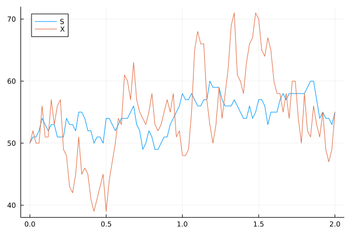
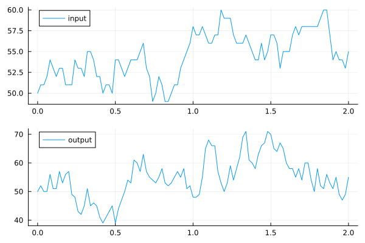
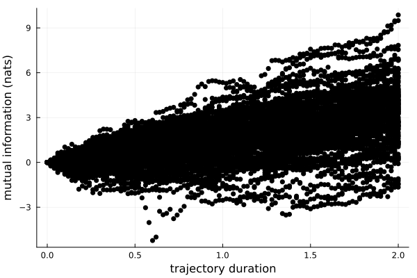
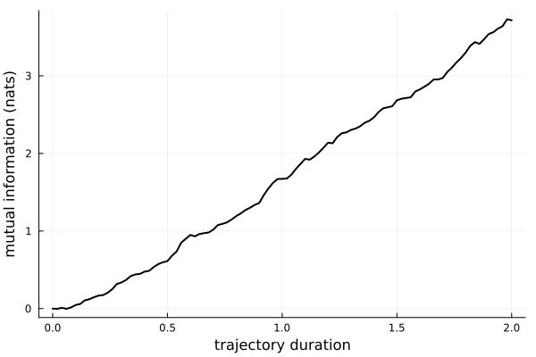
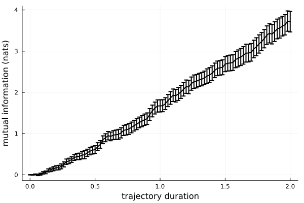
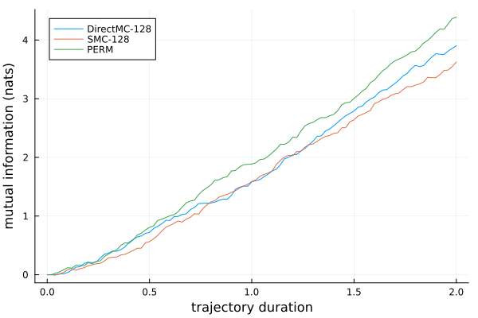

Guide
This guide computes the mutual information for a simple gene-expression model.
Setting Up the System
The model considered in this example consists of four reactions:
κ
reaction 1: ∅ ---> S
λ
reaction 2: S ---> ∅
ρ
reaction 3: S ---> S + X
μ
reaction 4: X ---> ∅The first two reactions govern the input signal S; the last two govern the output X. Both follow birth-death dynamics, but the birth rate of X increases with the copy number of S.
This gene-expression model is included in PathWeightSampling.jl. Create it with:
import PathWeightSampling as PWS
system = PWS.gene_expression_system()MarkovJumpSystem with 2 species and 4 reactions
ReactionSet with species S, X
k1 = 50.00: ∅ ---> S
k2 = 1.00: S ---> ∅
k3 = 10.00: S ---> S + X
k4 = 10.00: X ---> ∅
Initial condition:
S = 50
X = 50This returns a system containing the four reactions, default initial conditions, and default reaction-rate parameters.
Generating and Plotting Trajectories
A configuration pairs an input trajectory with an output trajectory. generate_configuration simulates the input first, then uses it to simulate the corresponding output.
conf = PWS.generate_configuration(system)PathWeightSampling.JumpSystem.TraceAndTrajectory{PathWeightSampling.SSA.ReactionTrace, Float64, Int64}(PathWeightSampling.SSA.ReactionTrace([0.0008167389920595662, 0.001868381748226072, 0.0028550006842913015, 0.0033712248160507313, 0.00609030889365928, 0.006311254416455283, 0.006344392334716748, 0.007279003077781243, 0.008489811275030075, 0.011066040452670728 … 1.9956692305331836, 1.995885100447671, 1.9958865215806838, 1.9959717584147467, 1.99714608306865, 1.997364957155603, 1.9984662770524675, 1.9988932075626276, 1.9997945417116676, 1.9998040517684004], Int16[4, 3, 4, 4, 4, 3, 3, 3, 4, 3 … 4, 4, 4, 3, 4, 3, 3, 3, 3, 4], BitSet([1, 2, 3, 4])), [0.0, 0.02, 0.04, 0.06, 0.08, 0.1, 0.12, 0.14, 0.16, 0.18 … 1.82, 1.84, 1.86, 1.88, 1.9, 1.92, 1.94, 1.96, 1.98, 2.0], [50 49 … 58 57; 50 52 … 53 54], [:S, :X])Plot the configuration with:
using Plots
plot(conf)
The plot shows the input and output trajectories that make up the configuration.
The individual trajectories of the configuration can also be accessed directly:
input_traj = conf.traj[1, :]
output_traj = conf.traj[2, :]
p1 = plot(conf.discrete_times, input_traj, label="input")
p2 = plot(conf.discrete_times, output_traj, label="output")
plot(p1, p2, layout = (2, 1))
Computing the Trajectory Mutual Information
Compute the trajectory mutual information with:
data = PWS.mutual_information(system, PWS.DirectMCEstimate(256), num_samples=100)
Progress: 2%|▌ | ETA: 0:02:12 ( 1.34 s/it)
Progress: 40%|██████████▊ | ETA: 0:00:06 (93.26 ms/it)
Progress: 81%|█████████████████████▉ | ETA: 0:00:01 (56.93 ms/it)
Progress: 100%|███████████████████████████| Time: 0:00:05 (50.27 ms/it)This runs a PWS Monte Carlo simulation and displays a progress bar. PWS.mutual_information takes the system as its first argument. The second argument selects the marginalization algorithm used to compute the marginal trajectory probability. Here, DirectMCEstimate(256) gives a "Direct PWS" estimate using $M=256$ brute-force samples.
The num_samples keyword controls the number of samples in the outer Monte Carlo simulation, as distinct from the $M=256$ samples in the inner Monte Carlo loop.
data.result is a DataFrame containing the simulation results. Plot the individual Monte Carlo samples with:
df = data.result
scatter(
df.time,
df.MutualInformation,
color=:black,
legend=false,
xlabel="trajectory duration",
ylabel="mutual information (nats)"
)
The Monte Carlo estimate is the mean of these samples:
using Statistics
using DataFrames
df = combine(groupby(data.result, :time), :MutualInformation => mean => :MI)
plot(
df.time,
df.MI,
color=:black,
linewidth=2,
legend=false,
xlabel="trajectory duration",
ylabel="mutual information (nats)"
)
With only 100 Monte Carlo samples, the estimates fluctuate noticeably. Error bars show the standard error of the mean: the standard deviation divided by the square root of the number of samples.
sem(x) = std(x) / sqrt(length(x))
df = combine(groupby(data.result, :time), :MutualInformation => mean => :MI, :MutualInformation => sem => :Err)
plot(
df.time,
df.MI,
yerr=df.Err,
color=:black,
linewidth=2,
legend=false,
xlabel="trajectory duration",
ylabel="mutual information (nats)"
)
More Advanced Marginalization Strategies
The examples above used the brute-force Direct PWS algorithm. To choose another approach to the marginalization integrals, pass a different estimator as the second argument of PWS.mutual_information:
DirectMCEstimate(m): The simple brute force marginalization using a Direct Monte Carlo estimate. The integermspecifies the number of samples to use per brute-force computation. This method works well for short trajectories but becomes exponentially worse for longer trajectories.SMCEstimate(m): Improved computation of marginalization integrals using a sequential Monte Carlo technique (specifically using a particle filter). The integermspecifies the number of "particles" that are being propagated simultaneously. This method works much better than theDirectMCEstimatefor long trajectories.TIEstimate(burn_in, integration_nodes, num_samples): Use thermodynamic integration to compute the marginalization integrals. This will set up a number of MCMC simulations in path-space to perform the TI integral.burn_inspecifies the number of initial samples from the MCMC simulation to be discarded,integration_nodesspecifies the number of points to use in the Gaussian quadrature, andnum_samplesspecifies the number of MCMC samples per integration node to generate.AnnealingEstimate(subsample, num_temps, num_samples): Use annealed importance sampling to compute the marginalization integrals. This technique is very similar to thermodynamic integration and also uses MCMC simulations in path space.subsamplespecifies the number of Metropolis trials to perform before recording a new MCMC sample.num_tempssets how many different "temperatures" should be used for the annealing.num_samplesis the number of MCMC samples to use per temperature setting.
We can compute the mutual information using each of these strategies and compare the results:
strategies = [
PWS.DirectMCEstimate(128),
PWS.SMCEstimate(128),
PWS.PERM(16)
]
results = [PWS.mutual_information(system, strat, num_samples=100, progress=false) for strat in strategies]
plot()
for (strat, r) in zip(strategies, results)
res = combine(groupby(r.result, :time), :MutualInformation => mean => :MI)
plot!(
res.time,
res.MI,
label=PWS.name(strat),
xlabel="trajectory duration",
ylabel="mutual information (nats)"
)
end
API Summary
The core function for estimating trajectory mutual information is PathWeightSampling.mutual_information. Its arguments and return value are documented below.
PathWeightSampling.mutual_information — Function
mutual_information(system, algorithm; num_samples=1, progress=true)Perform a simulation to compute the mutual information between input and output trajectories of system.
Arguments
The required marginalization integrals to obtain the marginal probability $\mathcal{P}[\bm{x}]$ are performed using the specified algorithm.
Overall, num_samples Monte Carlo samples are performed. For each individual sample, one or mupltiple marginalization operations need to be performed.
If progress == true, a progress bar will be shown during the computation.
Returns
Returns a DataFrame containing the results of the simulation. This resulting DataFrame has 3 columns. Assuming, the returned value has been named result the columns can be accessed by:
result.MutualInformation: A vector of vectors that contains the results of the simulation. Each element of the outer vector is the result of a single Monte Carlo sample. Each element is a vector containing the trajectory mutual information estimates for each time specified insystem.dtimes.result.TimeMarginal: A vector containing, for each sample, the CPU time in seconds used for the computation of the marginal entropy.result.TimeConditional: A vector containing, for each sample, the CPU time in seconds used for the computation of the conditional entropy.